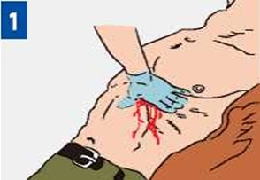
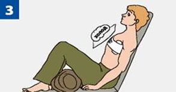
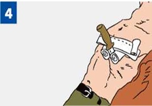

ПЕРВАЯ ПОМОЩЬ ПРИ РАНЕНИИ ГРУДНОЙ КЛЕТКИ

|
Признаки: кровотечение из раны на грудной клетке с возможным образованием пузырей и подсасыванием воздуха через рану. При отсутствии в ране инородного предмета прижми ладонь к ране и закрой в нее доступ воздуха. Если рана сквозная, закрой входное и выходное раневые отверстия. |
Закрой рану воздухонепроницаемым материалом (герметизируй рану), зафиксируй этот материал повязкой или пластырем. |
|

|
Придай пострадавшему положение «полусидя». Приложи холод к ране, подложив тканевую прокладку. |

|
При наличии в ране инородного предмета зафиксируй его валиками из бинта, пластырем или повязкой. Извлекать из раны инородные предметы на месте происшествия запрещается! Вызови (самостоятельно или с помощью окружающих) скорую медицинскую помощь. |
Источник:
http://www.culture.mchs.gov.ru/medical/algorithms_of_first_aid_to_victims_of_traumatic_injuries_and_urgent_situations/first_aid_in_penetrating_chest_injury/
ТЕЛЕФОН СЛУЖБЫ СПАСЕНИЯ: 112